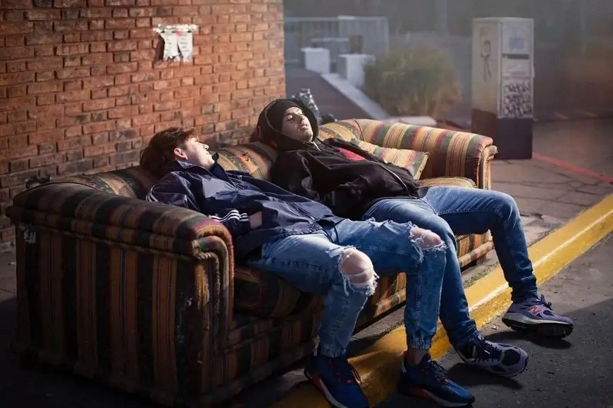
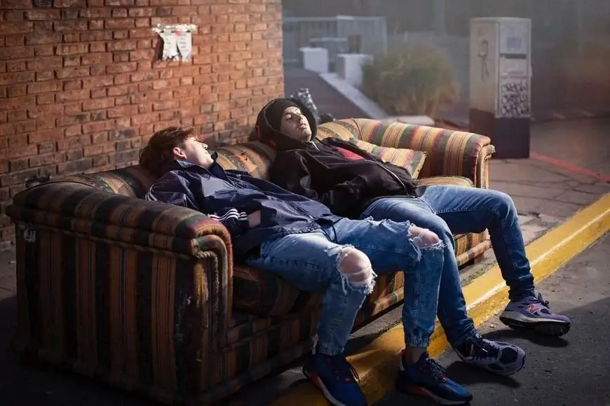

Paulo Londra y Duki estrenaron “Party en el barrio” y el ambiente se puso pesado
La esperada colaboración entre dos de los máximos referentes de la música urbana argentina ya es un éxito: superó las 3 millones de visualizaciones en pocas horas.
La esperada colaboración entre dos de los máximos referentes de la música urbana argentina ya es un éxito: superó las 3 millones de visualizaciones en pocas horas.
Agotó entradas en todas las ciudades españolas.
Duki en Vélez: quiénes subieron a rapear y cómo fue el show donde el trap llegó por primera vez a un estadio.
Duki sorprendió a Emilia Mernes regalándole un ramo de rosas en pleno show
Duki fué agredido en Velez con un vaso de agua revoleado desde el público y su reacción fué viral.
Se trata del tercer adelanto de “Temporada en el reggaeton 2″.